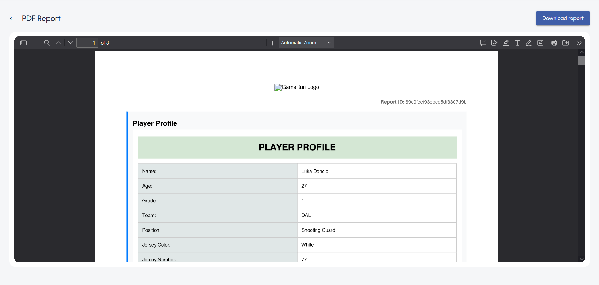
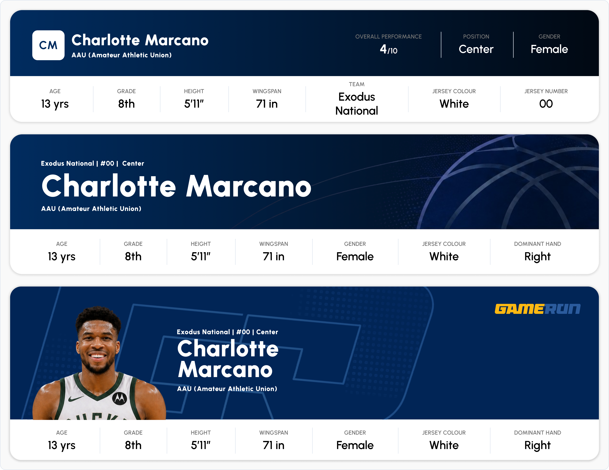
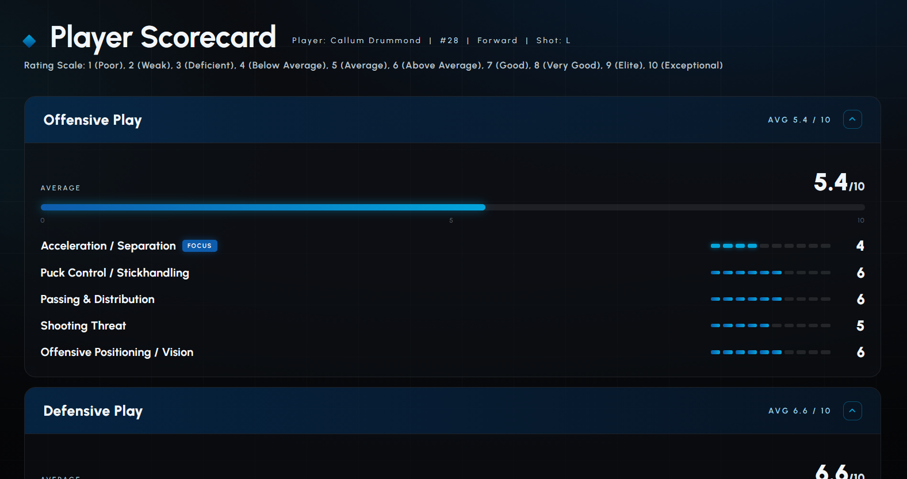
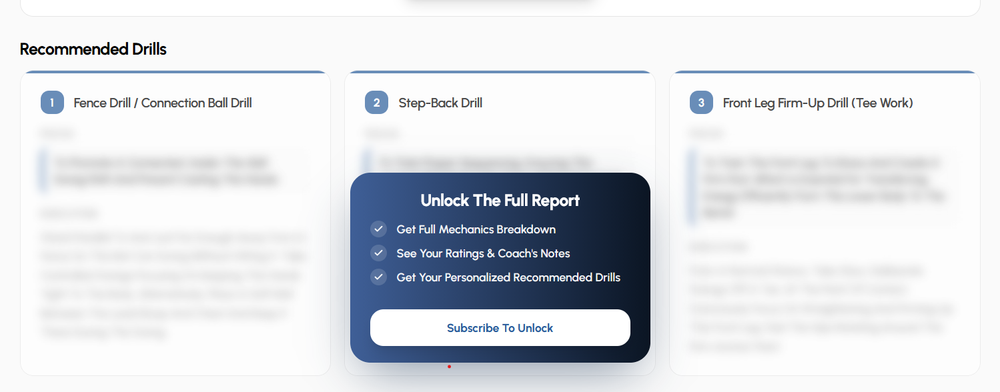
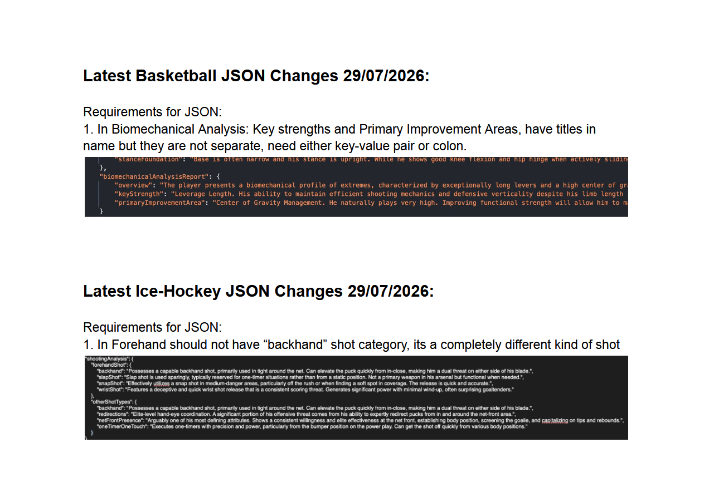
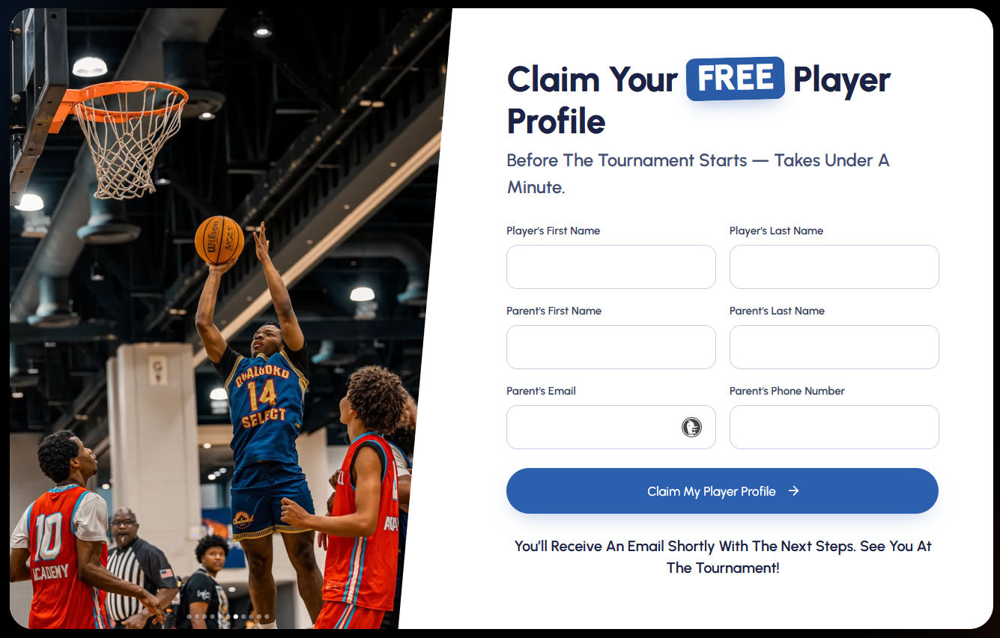
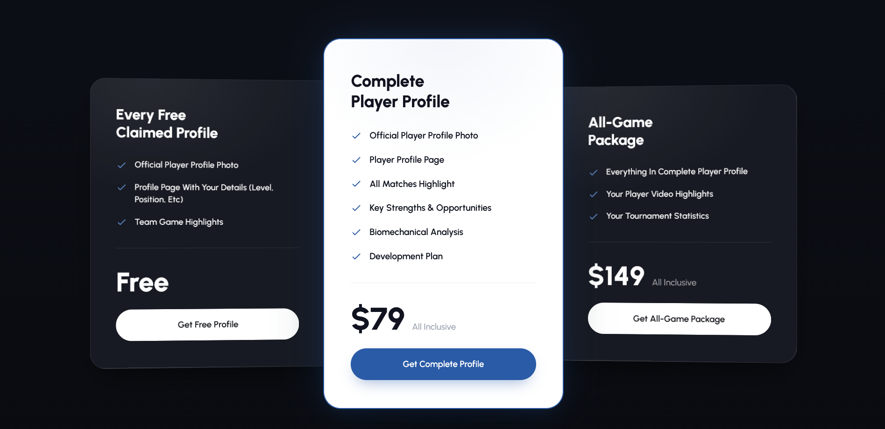
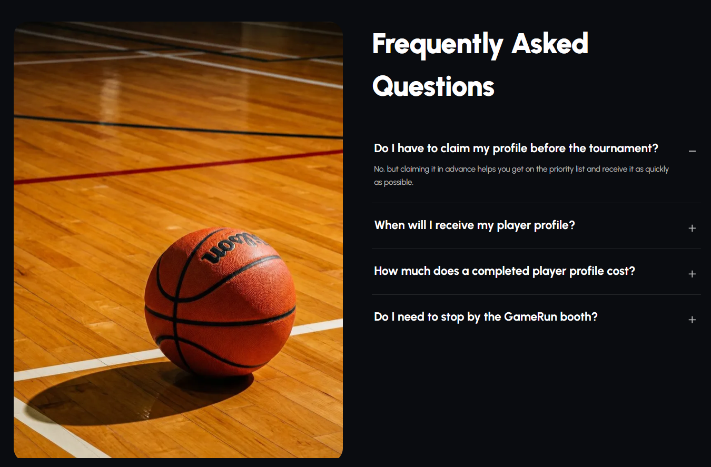
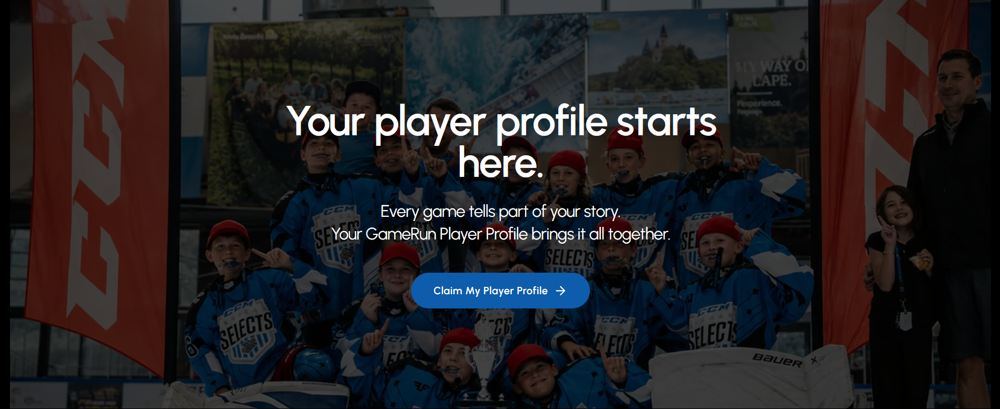

New AI Analytics Ecosystem
One product modelled for users, partners, events etc.
GameRun had a report system, the output was PDF Files that resulted in only 25% customer acquisition, and a separate out of the app flow.
Users downloaded and shared the PDFs, and not the platform, the report was poorly designed and not properly accessible on phone.
I designed dynamic, responsive reports that work on web and phone, can be shared through app links and drive customer growth and partner event deals.
Outdated Reports, low conversions, non existent ecosystem

older versions looked bland and baseless
Design Decisions and trade-offs

versions of new reports
Redesigned bare text to visuals, dynamic tables and sections accessible through every touchpoint

Metrics Versions through the history

Moulded for partner reports sections

New pricinng meant new tiers, features and gating, i managed that as well

Wrote Requirements for AI Reponses with AI/ML Teams

Outcome was great Reports

Multiple events and pages

Marketing Pages

Marketing Pages

Marketing Pages

Marketing Pages
Fluid navigation in motion
Test the 2-Axis Switcher Directly
Migrating users without shocking them
Business and technical outcomes
“These reports go amazingly for our events and partner pages” — Direct Feedback from C Suite